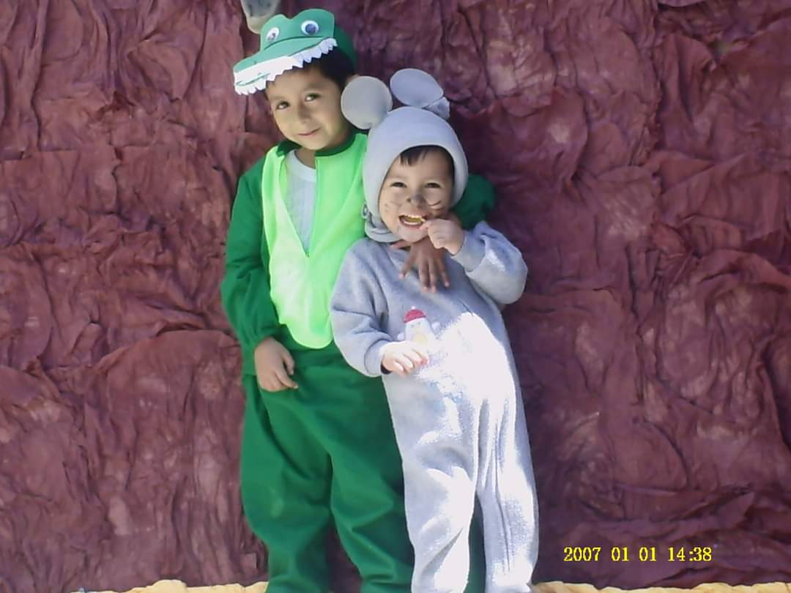
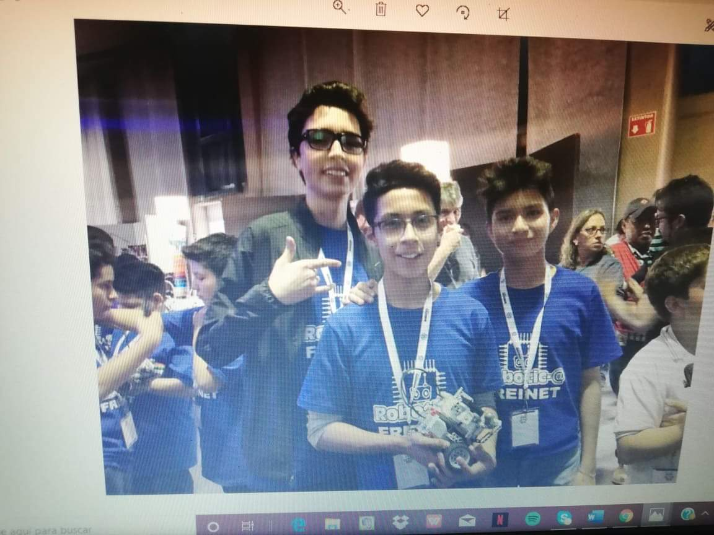
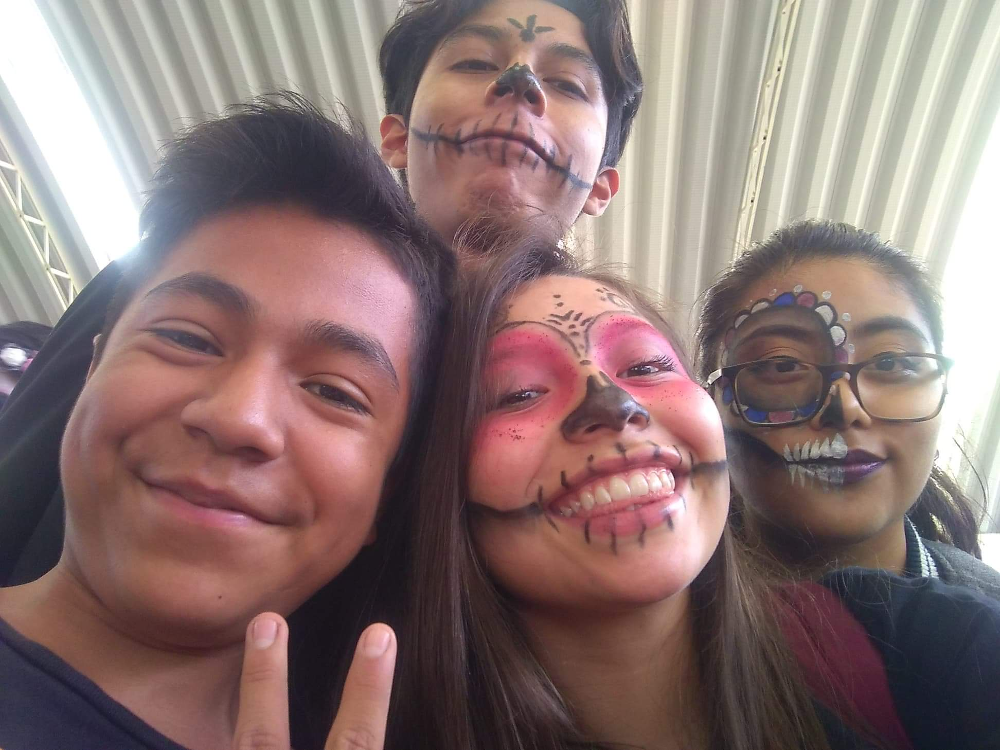

 Mi nombre es Fernando Barragan Molina, naci el 3 de Mayo de 2004 en la Ciudad de Mexico mi madre se llama Karina Barragan Molina, tengo 2 medios hermanos uno actualmente vive conmigo se llama Santiago Barragan Molina y una media hermana a la cual no conozco. A los 4 años entré al CENDI un kinder por parte del trabajo de mi mamá dónde estuve hasta los 6 años, donde entre al Colegio Miguel Angel Buonarotti ubicado por Rio de los Remedios, estuve ahi por 2 años cuando en tercero de primaria me cambie a la UPE por motivos personales donde solo estuve 3 mese ya que estaba en turno vespertino y mno estaba acostumbrado a ir en la tarde. Finalmente me cabie a la Primaria Casa de morelos donde finalmente me senti comodo, en esa escuela conoci amistades que en la actualidad las sigo viendo me gustaba jugar mucho futbol y sacar buenas califiaciones, tuve un profesor llamado Emmanuel el cual admiraba ya que era alguien innovador e increible. En sexto de primaria entre a la escolta donde fui a varios eventos por parte del municipio, uno de ellos fue la primera vez que fui a Six Flags, para mi fue increible y me subi a todos los juegos ya que nunca habia ido a un lugar asi. Tambien conoci muchos amigos de la UPE con los cuales curso la preparatoria con ellos.
 Cuando termine la primaria estaba muy nervioso ya que para mi fue un gran paso, entre al Colegio Celestin Freinet ubicado en Laredo,San Carlos , en primer año conoci nuevos amigos que en la actualidad nos seguimos viendo, era muy timido per poco a poco supe superar ese temor y ser yo mismo eso me ayudo a tener mejores amigos y mas confianza en mi mismo, estaba muy comprometido conmigo mismo asi que me esforze en sacar buenas calificaciones para una beca, la cual logre, llevaba robotica en esa escuela y en segundo de secundaria entre a un concurso de Lego Sumo en el cual creabamos un robot para pelear estp fue en el Colegio Israelita en el cual aganamos municipalmente y nos eliminaron en las estatales. Pronot comenze mi interes por ver en que Preparatoria iba a estudiar asi que investigue ypor muchas razones siempre me parecio genial la Vocacional 3, entre a un curso de COMIPEMS ahi mismo en Voca 3 y estaba decidido a que me iba a quedar ahi Me esforze y gracias a ese esfuerzo me quede en mi primera opcion.
 Cuando me entere de que me habia quedado en mi primera opcion no me la podia creer, yo no estaba en Mexico ya que por parte de los Scouts habia ido a un evento Internacional en Estados Unidos, por ese motivo no fui al recorrido ni a inscribirme al , mi primer dia fue inmemorable ya que me equivoque de grupo Mi grupo era el 1IV10, iba en la tarde por lo que me fue dificil acostumbrarme pero lo logre y consegui amigos muy buenos a los que actualmente extraño pero nos vemos. Saque promedio de 8.6 lo cual me permitio cambiarme a la mañana junto co 6 amigos mas de mi mismo salon, afortunadamente a tod@s nos dieron el cambio y me toco en el mismo salon con mi mejor amiga, pero eso separo el grupo con el que nos llevabamos en la tarde. Tuvimos que adaptarnos pero nos era dificl encajar ya que pues todos en nuestro nuevo salon ya se conocian, pero poco a poco nos fuimos metiendo. Hicimos buenas amistades en lo poco que llevabamos antes de la Pandemia, ahora estamos en espera de nuestras calificaciones para concluir el segundo semestre y elegir nuestra carrera.